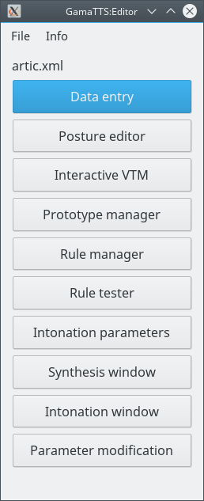
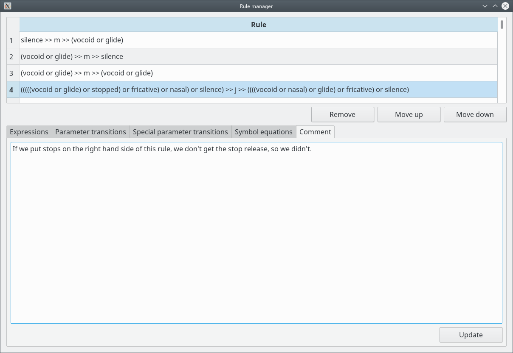
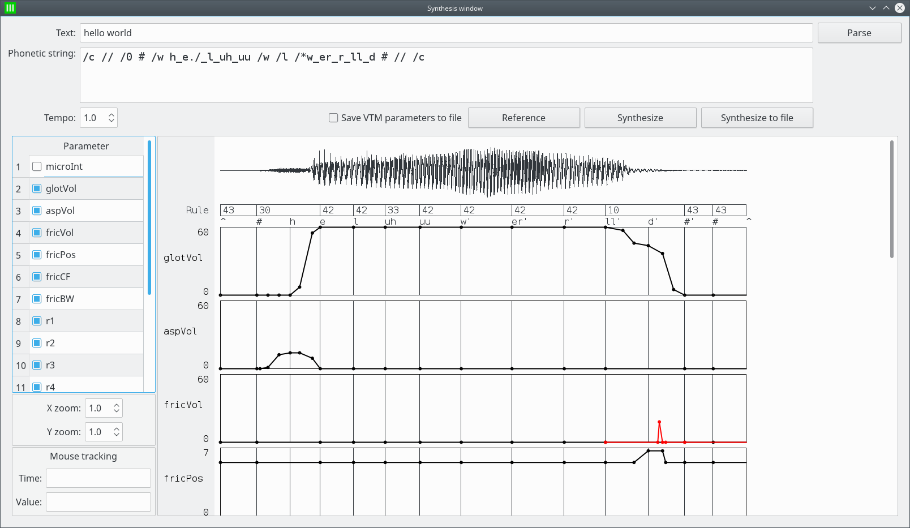
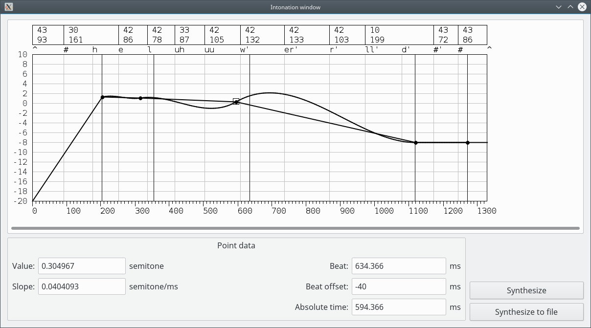

How to use GamaTTS:Editor
- Preparation
- Notes
- Main window
- Data entry - categories
- Data entry - parameters
- Data entry - symbols
- Posture editor - management and categories
- Posture editor - parameters
- Posture editor - symbols
- Interactive vocal tract model
- Interactive vocal tract model - analysis
- Prototype manager - equations
- Prototype manager - transitions
- Transition editor
- Prototype manager - special transitions
- Special transition editor
- Rule manager - expressions
- Rule manager - transitions
- Rule manager - special parameter transitions
- Rule manager - symbol equations
- Rule manager - comment
- Rule tester
- Intonation parameters
- Synthesis window
- Intonation window
- Parameter modification
Preparation
The software QJackCtl must be installed. Configure the sample rate to 44100 Hz (this value can be changed in the file vtm.config)
and start QJackCtl.
Copy the data files contained in the directory data/ (from the source package or from /usr/share/gama_tts/data) to another directory.
The user must have write access to this directory.
Run the program gama_tts_editor.
Notes
- The times are defined in milliseconds.
- In Postures, the Symbols "duration" and "markedDuration" are not being used.
- The database must contain the Category "phone", and the Postures "#" and "^".
- The number of Symbols and their names must not be changed.
- The first vocal tract model parameter must be the pitch.
Main window

Operations:
- Open a model:
Click on File/Open and select the fileartic.xmlin the data directory. - Save the model:
Click on File/Save. - Save the model to a different file:
Click on File/Save as. - Reload the model:
Click on File/Reload. All changes are lost. When some configuration files are modified, the model must be reloaded manually. - Quit:
Click on File/Quit. - Open other windows:
Click on the buttons.
Data entry - categories
Categories are used to reduce the number of needed rules. Postures can be members of a Category. A rule can then match a Category instead of many individual Postures.
The column "Is used?" indicates if the Category is in use. The number shows how many times it is referenced. A Category can't be removed if it is in use.
Operations:
- Change the name:
Double-click on the name, change it and press ENTER. - Add an item:
Select a line (if the table is not empy), click on "Add" and the new item will be created after the selected line. The name of the new item is "___new___". - Remove the item:
Select a line and click on "Remove". The "phone" Category must not be removed. - Move an item up:
Select a line and click on "Move up". - Move an item down:
Select a line and click on "Move down". - Add/change the comment:
Enter the text and click on "Update".
Data entry - parameters

These are the parameters that will be sent to the vocal tract model. Each Posture has a set of Parameter values.
The operations (except changing the comment) are blocked if there is at least one Posture or one Rule in the database.
Operations:
- Change the name or a value:
Double-click on the cell, change it and press ENTER. - Add an item:
Select a line (if the table is not empy), click on "Add" and the new item will be created after the selected line. The name of the new item is "___new___". - Remove the item:
Select a line and click on "Remove". - Move an item up:
Select a line and click on "Move up". - Move an item down:
Select a line and click on "Move down". - Add/change the comment:
Enter the text and click on "Update".
Data entry - symbols
The Symbols are used by the Postures to indicate their time durations.
The operations (except changing the comment) are blocked if there is at least one Posture or one Rule in the database. The user must not change the number of parameters. Only the minimum, maximum and default values should be changed.
Operations:
- Change the name or a value:
Double-click on the cell, change it and press ENTER. - Add an item:
Select a line (if the table is not empy), click on "Add" and the new item will be created after the selected line. The name of the new item is "___new___". - Remove the item:
Select a line and click on "Remove". - Move an item up:
Select a line and click on "Move up". - Move an item down:
Select a line and click on "Move down". - Add/change the comment:
Enter the text and click on "Update".
Posture editor - management and categories

The Categories are used to make filtering Postures easier.
Operations:
- Rename the Posture:
Double-click on the cell, change it and press ENTER. - Add a Posture:
Click on "Add". The name of the new item is "###new###". The Postures are sorted by the values of the code units (bytes) in the UTF-8 encoding. - Remove a Posture:
Select a line in the Posture list and click on "Remove". The "#" and "^" Postures must not be removed. - Add/change the comment:
Enter the text and click on "Update". - Add the Posture to a Category:
Select a line in the Categories table and check the checkbox in the "Is member?" column. Uncheck to remove the Posture from a Category. The Posture can not be removed from the "phone" Category.
Posture editor - parameters
The Parameter values are configurations of the vocal tract model that produce the desired sound.
Parameter values that are different from the default are shown in bold.
Operations:
- Change a Parameter value:
Double-click on a cell in the "Value" column, change it and press ENTER. - Use a default Parameter value:
Select a line in the Parameters table and click on "Use default". - Copy the Parameter values to the clipboard:
Click on "Copy". The values can be copied to the interactive VTM. - Paste the Parameter values from the clipboard:
Click on "Paste". The format must be the same as the one used by the "Copy" button.
Posture editor - symbols
The Symbol values indicate the durations of each phase of the articulation.
Qssa (quasi steady state A) is the duration of the slow variation phase just before the center of the Posture.
Qssb (quasi steady state B) is the duration of the slow variation phase just after the center of the Posture.
Transition is the duration of the fast variation phase before of after the slow variation phases.
"Duration" is the total duration of the Posture, and is roughly equal to qssa + qssb + transition.
The symbols with the "marked" prefix are used for marked Postures.
Symbol values that are different from the default are shown in bold.
Operations:
- Change a Symbol value:
Double-click on a cell in the "Value" column, change it and press ENTER. - Use a default Symbol value:
Select a line in the Symbols table and click on "Use default".
Interactive vocal tract model
The interactive vocal tract model is used to find a configuration that produces the correct sound of a Posture.
During the synthesis, the volume is normalized (to avoid clipping), but the gain is only reduced, never increased. To increase the gain if the sound is well below the threshold for the current configuration, the synthesis must be restarted.
Dynamic parameters can be changed without a restart. To change static parameters, the synthesis must be restarted.
Operations:
- Load the parameter values of a Posture:
Select a Posture in the posture editor. - Paste parameter values from the clipboard:
Click on "Past dyn. parameters" to use the values copied from the Posture editor. - Copy parameter values to the clipboard:
Click on "Copy dyn. parameters" to send the values to the Posture editor. - Start/restart the interactive session:
Click on "(Re)start". The synthesis is restarted without reloading the configuration. - Stop the interactive session:
Click on "Stop". - Reload the configuration:
Click on "Reload Configuration". The configuration files are read and the synthesis is restarted. - Open the analysis window:
Click on "Analysis". - Change the dynamic parameters:
Move the sliders, or enter the new value in the text input and press ENTER. - Change the static parameters:
Move the sliders, or enter the new value in the text input and press ENTER. Then click on "Apply". The synthesis is restarted. - Load dynamic parameters from a file:
Click on File/Load Dynamic Parameters. - Save dynamic parameters to a file:
Click on File/Save Dynamic Parameters.
Interactive vocal tract model - analysis

This is a simple spectrum/signal viewer. External spectrum viewers can be connected through JACK.
Operations:
- Change the view:
Select "Spectrum" to view the spectrum, and "Signal" to see the time domain waveform. - Start/stop the viewer:
Click on "Start" or "Stop". - Change the parameters of the spectrum:
Select the window size and window type. - Select the maximum frequency of the spectrum:
The graph will show from 0 Hz to the selected frequency. - Select the y-axis scale for the spectrum:
Select "Linear" or "Log". - Select the y scale limits:
Select the minimum dB level. The graph will show from to the select level to 0 dB, if the y-axis is logarithmic. - Change the cursor:
Set the frequency in the text input or click on the up/down arrows. The cursor will be indicated by a blue vertical line in the graph. The cursor only appears on the spetrum.
Prototype manager - equations

Equations are used to calculate times from the values of Posture symbols. Qssa1 is the value of qssa for the Posture 1, qssa2 is the value for Posture 2, and so on. Equations can use constant times too (in milliseconds), if needed.
The column "Is used?" is read-only and indicates if the Equation is being used and how many times it is referenced.
Operations:
- Add a group:
Select an item (if the list is not empty) and click on "Add". The name of new group is "___new___" and it is created at the end. - Add an item:
Select a group and click on "Add". The name of new item is "___new___" and it is created at the end of the group. - Rename a group/item:
Double-click on the group/item, change the text and press ENTER. - Remove a group/item:
Select the group or item and click on "Remove". - Move the group/item up:
Select the group or item and click on "Move up". - Move the group/item down:
Select the group or item and click on "Move down". - Add/change the comment:
Select the item, enter the text and click on "Update". - Change the formula:
Select the item, enter the formula and click on "Update".
Prototype manager - transitions
Transitions are curves that indicate how a Posture parameter will vary between Postures during an articulation.
The column "Is used?" is read-only and indicates if the Transition is being used and how many times it is referenced.
Operations:
- Add a group:
Select an item (if the list is not empty) and click on "Add". The name of new group is "___new___" and it is created at the end. - Add an item:
Select a group and click on "Add". The name of new item is "___new___" and it is created at the end of the group. - Rename a group/item:
Double-click on the group/item, change the text and press ENTER. - Remove a group/item:
Select the group or item and click on "Remove". - Move the group/item up:
Select the group or item and click on "Move up". - Move the group/item down:
Select the group or item and click on "Move down". - Add/change the comment:
Select the item, enter the text and click on "Update". - Edit the Transition:
Select the item and click on "Edit".
Transition editor
Transitions can be diphone (two Postures), triphone (three Postures) or tetraphone (four Postures).
Diphone Transitions have one phase (between Posture 1 and Posture 2), triphone two (between Posture 1 and Posture 2 and between Posture 2 and Posture 3) and tetraphone three (between Posture 1 and Posture 2, between Posture 2 and Posture 3 and between Posture 3 and Posture 4).
The parameter values are linearly interpolated between points.
In each phase, the point values vary from 0 at the start Posture to 100 at the end Posture.
The parameter value is calculated by:
value = start_value + (start_value - end_value) * (point_value / 100).
The point values can be defined manually, or by using slopes. In a slope group, the effective slopes of each linear segment are proportional to the defined slope values. This means that the slopes are relative to the other slopes in the group. The slopes are indicated at the bottom of the graph.
In this editor, for the calculation of the point times (using the Equations), the following values are set:
qssa / qssb / transition = 100/3 ms
phase duration = 100 ms
mark1 = 100 ms
mark2 = 200 ms
mark3 = 300 ms
total duration = 100 ms (diphone), 200 ms (triphone), 300 ms (tetraphone)
The points are sorted by type and by time.
The last point of the Transition is ignored (it is a "phantom" point).
The modifications in this window are not executed directly on the main Model. Only when the user clicks on "Update" the changes are sent to the Model.
Operations:
- Select the type of the Transition:
Select the type in the "Type" combobox. - Add a point:
Double click on the graph. The point type is determined by the phase in which the point is created. The point is created with absolute time (the time is not defined by an Equation). - Select a point:
Click on the graph near the point or select a line in the points table. - Remove a point:
Select a point and click on "Remove". - Change the point value:
Select a point, double-click on the "Value" column, enter the value and press ENTER. The value can not be changed if the point is the start of a slope, because in this case the slope calculation is what determines the value of the point. - Set the point as the start of a slope:
Select a point and check the "Has slope?" column. - Set the slope:
Select a point, double-click on the "Slope" column, enter the value and press ENTER. - Set the point time:
Select a point and select an Equation in the Equations tree at the right. It is not possible to clear the time (go back to absolute time). - Send the changes to the Model:
Click on "Update". Any modifications are lost if this operation is not executed.
Prototype manager - special transitions
Special Transitions are curves that indicate how a Posture parameter will vary between Postures during an articulation. They are used when the normal Transitions are not flexible enough. Special Transitions are used in some articulations involving consonants, and in micro-intonation.
The column "Is used?" is read-only and indicates if the Special Transition is being used and how many times it is referenced.
Operations:
- Add a group:
Select an item (if the list is not empty) and click on "Add". The name of new group is "___new___" and it is created at the end. - Add an item:
Select a group and click on "Add". The name of new item is "___new___" and it is created at the end of the group. - Rename a group/item:
Double-click on the group/item, change the text and press ENTER. - Remove a group/item:
Select the group or item and click on "Remove". - Move the group/item up:
Select the group or item and click on "Move up". - Move the group/item down:
Select the group or item and click on "Move down". - Add/change the comment:
Select the item, enter the text and click on "Update". - Edit the Special Transition:
Select the item and click on "Edit".
Special transition editor
Special Transitions can be diphone (two Postures), triphone (three Postures) or tetraphone (four Postures).
Diphone Special Transitions have one phase (between Posture 1 and Posture 2), triphone two (between Posture 1 and Posture 2 and between Posture 2 and Posture 3) and tetraphone three (between Posture 1 and Posture 2, between Posture 2 and Posture 3 and between Posture 3 and Posture 4).
The parameter values are linearly interpolated between points. The phase is ignored.
The parameter value during the Special Transition is calculated by:
value = (max_value - min_value) * (point_value / 100),
where the minimum and maximum values are defined in the Data entry window, Parameters tab.
The value does not depend on the values of Posture parameters.
The values produced by the Special Transitions are added to the values produced by the normal Transitions.
In this editor, for the calculation of the point times (using the Equations), the following values are set:
qssa / qssb / transition = 100/3 ms
phase duration = 100 ms
mark1 = 100 ms
mark2 = 200 ms
mark3 = 300 ms
total duration = 100 ms (diphone), 200 ms (triphone), 300 ms (tetraphone)
The points are sorted by time (the point type is ignored).
The modifications in this window are not executed directly on the main Model. Only when the user clicks on "Update" the changes are sent to the Model.
Operations:
- Select the type of the Transition:
Select the type in the "Type" combobox. - Add a point:
Double click on the graph. The point type is determined by the phase in which the point is created. The point is created with absolute time (the time is not defined by an Equation). - Select a point:
Click on the graph near the point or select a line in the points table. - Remove a point:
Select a point and click on "Remove". - Change the point value:
Select a point, double-click on the "Value" column, enter the value and press ENTER. - Set the point time:
Select a point and select an Equation in the Equations tree at the right. It is not possible to clear the time (go back to absolute time). - Send the changes to the Model:
Click on "Update". Any modifications are lost if this operation is not executed.
Rule manager - expressions
Rules are created to select what Transitions and Special Transitions are used for each Posture sequence, and for each parameter.
A Rule is selected using its boolean expressions. A Rule with 2 boolean expressions can match two consecutive Postures (diphone), a Rule with 3 boolean expressions can match three consecutive Postures (triphone), and a Rule with 4 boolean expressions can match four consecutive Postures (tetraphone). Boolean expressions can use Category and Posture names, and boolean operators. They can also use the "marked" operator to match a marked Posture.
For a given Posture sequence, the Rules are searched from the first to the last (order is important). The first matching Rule defines the Transitions and Special Transitions that will be used for the Posture sequence.
In the "Total matches" lists, marked Postures are indicated by an apostrophe at the end of the Posture name.
Operations:
- Add a Rule:
Select a Rule (if the list is not empty), enter two or more boolean expressions and click on "Add". The Rule is created before the selected Rule. - Remove a Rule:
Select a Rule and click on "Remove". - Move the Rule up:
Select a Rule and click on "Move up". - Move the Rule down:
Select a Rule and click on "Move down". - Change the boolean expressions:
Select a Rule, change the boolean expressions and click on "Update".
Rule manager - transitions

Operations:
- Select a Transition for a parameter:
Select the parameter and select the Transition on the Transitions tree. All parameters must have a Transition assigned to them.
Rule manager - special parameter transitions
Operations:
- Select a Special Transition for a parameter:
Select the parameter and select the Special Transition on the Special Transitions tree. - Clear a parameter:
Select the parameter and click on "Clear". Special Transitions are optional.
Rule manager - symbol equations

The symbol equations define the durations for the Rule.
Operations:
- Select an Equation for a symbol:
Select the symbol and select the Equation on the Equations tree. - Clear a symbol:
Select the symbol and click on "Clear". Mark 3 should only used by tetraphone Rules, and Mark 2 should only used by triphone and tetraphone Rules.
Rule manager - comment

Operations:
- Add/change the comment:
Enter the text and click on "Update".
Rule tester

With this window the user can find out what Rule is selected for a given Posture sequence.
Marked Postures can be indicated by an apostrophe at the end of the Posture name.
Operations:
- Shift the Postures:
Click on "Shift postures left" and the Posture 2 will be moved to Posture 1, the Posture 3 will be moved to Posture 2 and so on. - Search for the first matching Rule:
Fill the Posture fields and click on "Test". Information about the Rule will appear on the window.
Intonation parameters
This window controls how the intonation curve is generated.
Control group:
- Micro intonation:
Intonation generated by Special Transitions. It produces fast and localized pitch perturbations, and may not have a small amplitude. - Macro intonation:
Intonation with a global effect, generated by a specific intonation code. The pitch variation is slower than the micro intonation. - Smooth intonation:
When enabled, the pitch between intonation points is calculated using cubic interpolation. When disabled, the interpolation is linear. - Random intonation:
When enabled, a set of intonation parameter values is chosen randomly. Each time a text is synthesized, the generated intonation may be different from previous executions. - Intonation drift:
The drift adds a fluctuation to the pitch.
Parameters group:
If the checkbox "Use these parameters" is checked, the intonation will be generated using these parameter values
instead of the parameter values from the configuration files.
Drift parameters group:
These parameters control the drift generator. The deviation value is not necessarily the maximum amplitude,
because the signal is filtered by a lowpass filter. In other words, it may be necessary to set a deviation value that is
higher than the desired value.
Operations:
- Set the parameters:
Click on "Update". If this button is not clicked, the changes will not have an effect.
Synthesis window

In this window, speech may be synthesized from a text or from a phonetic string (Gnuspeech format).
Tempo values greater than one speed up the synthesized speech, and vice versa.
When the checkbox "Save VTM parameters to file" is checked, the vocal tract parameters are saved to the file
generated__vtm_param.txt in the data directory.
The mouse tracking shows the time and value for the current cursor position in the graph.
Signals produced using Special Transitions are shown in red.
Operations:
- Parse the text and synthesize it:
Enter the text in the field "Text" and press ENTER, or click on "Parse". A phonetic string is inserted into the field "Phonetic string". - Synthesize the phonetic string using the saved data:
Click on "Reference" and the sound will be sent to JACK audio. This is useful to compare the (unsaved) modifications with the saved (reference) data. - Synthesize the phonetic string:
Click on "Synthesize" and the sound will be sent to JACK audio. - Synthesize the phonetic string to file:
Click on "Synthesize to file" and the sound will be sent to a WAVE file. - Unselect a parameter:
Uncheck a checkbox in the Parameters list. - Select a parameter:
Check a checkbox in the Parameters list. The parameter is added at the bottom of the graph. - Adjust the zoom in the graph:
Set the x and y zoom controls, entering the value, using the mouse wheel or clicking on the up/down arrows. - Reset the zoom:
Double-click on the graph.
Intonation window

This window shows the generated macro intonation, and allows the customization of the curve. The curve is shown only after a text is synthesized in the Synthesis window.
The graph shows the pitch before it is added to
(vtm_control_model.config:pitch_offset + voice_*.config:reference_glottal_pitch).
At the top of the graph, the Rule numbers are shown, and below them the Rule duration in milliseconds.
The fields "Beat" and "Absolute time" are read-only. The absolute time is the sum of the beat and beat offset values.
The beat positions are indicated by vertical black lines.
The graph shows the cubic interpolation curve and also the linear interpolation one. The first segment uses always linear interpolation, even with smooth intonation enabled.
Operations:
- Select an intonation point:
Click on the graph near the target point. - Move point to the previous/next Rule:
Press LEFT/RIGHT. - Increase/decrease point value by 1 semitone:
Press UP/DOWN. - Change the point value:
Enter the value and press ENTER. - Change the point slope:
Enter the slope and press ENTER. - Change the beat offset:
Enter the beat offset and press ENTER. - Synthesize to audio:
Click on "Synthesize" and the sound will be sent to JACK audio. - Synthesize to file:
Click on "Synthesize to file" and the sound will be sent to a WAVE file.
Parameter modification
In this window the vocal tract parameters can be modified in real time.
The parameter that will be modified can be selected in the combo box at the top.
The modification can be set to "Add" or "Multiply". When set to "Add", the modification value will be added to the parameter value. When set to "Multiply", the parameter value will be multiplied by the modification value.
If the amplitude field is set to a value V, and the modification is set to "Add", the modification will have a value between -V and V. When the modification is set to "Multiply", the amplitude is always 1.0 and the modification will have a value between 0.0 and 2.0 (the center in the input area have a value of 1.0).
Automatic gain normalization is not executed. For this reason, an attenuation can be set in the output gain combo box (to avoid saturation).
In the input area, only the horizontal (x) position of the mouse cursor is captured.
In the parameter curve graph, the original parameter curve is shown in black, and the modified curve is shown in blue.
Operations:
- Modify a parameter:
Click on the input area, near the central line, and the synthesis will start. Move the mouse to the left or to the right, and hear the sound of the modified speech in real time. The synthesis will stop at the end of the parameter data. - Reset a parameter:
Click on the button "Reset parameter". - Synthesize to audio:
Click on "Synthesize" and the sound will be sent to JACK audio, using the modified parameters. - Synthesize to file:
Click on "Synthesize to file" and the sound will be sent to a WAVE file, using the modified parameters. If the option "Save VTM parameters to file" is set, the modified parameters will be saved to a file.